Prayer on University Shahid Beheshti University's campus I think my experience in Iran has been slightly different from that of a traveller, as I went there for a course of Persian at Dehkhoda Institute. I spent forty days there, and I have stayed primarily in Tehran, where the Institute was. I only traveled to Shiraz for a weekend and to Sari (in the North, near the Caspian sea) for another weekend. I had been in Iran before and I had back then visited Esfahan too. Well, let me start with Esfahan. They call the city “nesf-e jahan”, half of the world, which in itself is not very surprising, if you think that there are many cities around the world where proud inhabitants make up phrases and expressions to promote the beauty and the unicity of the city itself (think about Naples, “vedi Napoli e poi muori” or Granada, “has llegado a Granada, lo mejor del mundo entero”). Well, I have to admit that few things I saw had on me the effect of seeing Naqsh-e Jahan Square in Esfahan. And not only the square makes you feel like you would like to spend some more time or even some years in that city, but also the streets full of young families having picnics everywhere you see grass, or the men sitting under si-o se pol, singing forbidden songs, promptly interrupted by the guards, when a too big crowd gathers to listen. Tehran Admittedly, going back to Tehran, having spent some days in cities like Esfahan or Shiraz, is a pure nightmare: the city is pregnant with smog, pollution, heavy air that makes you feel tired only after walking a kilometer on your feet, if you have survived to cross the streets in the middle of the busiest traffic you can
Prayer on University Shahid Beheshti University’s campus
I think my experience in Iran has been slightly different from that of a traveller, as I went there for a course of Persian at Dehkhoda Institute.
I spent forty days there, and I have stayed primarily in Tehran, where the Institute was. I only traveled to Shiraz for a weekend and to Sari (in the North, near the Caspian sea) for another weekend. I had been in Iran before and I had back then visited Esfahan too.
Well, let me start with Esfahan. They call the city “nesf-e jahan”, half of the world, which in itself is not very surprising, if you think that there are many cities around the world where proud inhabitants make up phrases and expressions to promote the beauty and the unicity of the city itself (think about Naples, “vedi Napoli e poi muori” or Granada, “has llegado a Granada, lo mejor del mundo entero”). Well, I have to admit that few things I saw had on me the effect of seeing Naqsh-e Jahan Square in Esfahan. And not only the square makes you feel like you would like to spend some more time or even some years in that city, but also the streets full of young families having picnics everywhere you see grass, or the men sitting under si-o se pol, singing forbidden songs, promptly interrupted by the guards, when a too big crowd gathers to listen.
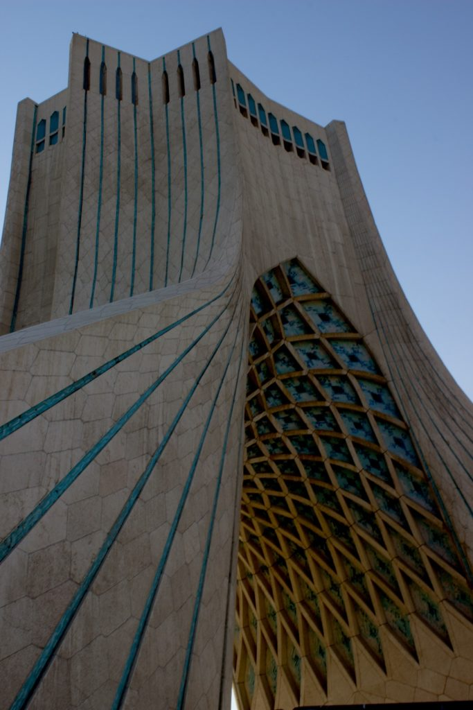Tehran
Admittedly, going back to Tehran, having spent some days in cities like Esfahan or Shiraz, is a pure nightmare: the city is pregnant with smog, pollution, heavy air that makes you feel tired only after walking a kilometer on your feet, if you have survived to cross the streets in the middle of the busiest traffic you can imagine. But Tehran is unfortunately the heart of Iran, the political thermometer, the city where everything is possible: seeing a woman moving around with her headscarf fallen off her head, high heels and very very tight clothes, that don’t leave much to imagination, and seeing another one all covered up in her black chador, the two walking together hand in hand. Hidden house parties where as soon as you arrive, everyone goes to take off the many layers of clothes they were wearing on the streets and hurries to get drunk, and religious processions where believers flog themselves to the point of bleeding.
And books: books are everywhere, books are scattered down on the pavement, on the piece of cloth where they are exposed by the street seller; books are staying orderly inside a book machine dispenser; books in the small library in Enghelab street where they organize weekly discussions about literature; books are in the hands of the women who fill the metro during pick hours in Tehran; books are everywhere. Poetry is everywhere too: in the speech of the taxi driver, in the song coming from the radio, in the recommendation of the grandmother while you are leaving her house, after helping her wash the dishes; in the air at the mausoleum of Hafez in Shiraz, crowded at whichever time you visit it, with people from all over the country.
Iran is the Persian teacher who will tell you more about the history of your own country than yourself have ever known. Iran is the incredible corners that open up unexpectedly while you are walking on the most common-looking street of Shiraz or Tehran, it’s the small café where you sit in an exquisite patio with a fountain in the middle and flowers all around. It’s Harry Potter café in Tehran, with the very young waitress who jumps up and down out of joy because she could exchange some French words with you; it’s Parvaneh market in Tehran, where all wishes come true, and all you ever wanted to buy is there, if you look closely and spend your morning going around its five floors. Iran is seeing a man walking his dog around with pride, in spite of the ban on possessing dogs, as they are supposedly haram.
Iran is many things, many people, and a huge country of which I only lived a small part, but where you will realise that, to say it with Maya Angelou, “we are more alike, my friends, than we are unalike”.
I traveled to Qazvin a while ago. Not because I chose Qazvin, just because Tehran's air was very polluted and we left the city to get rid of it. Again, our goal was not to travel to Qazvin, according to the habit of people in Tehran, we rode on the Chalous road, which kept us from continuing the path to the long traffic lane of the road. So we turned away and turned to Karaj. We hopelessly checked out the available facilities to retreat back home. Eventually we decided to go to Qazvin. We were not very optimistic about the choice, but there was no other option. On the way, thanks to the Internet, we went looking for a few hotels and eventually contacting one of the traditional hotels, traditional Behrouzi hotel. I do not know how many times I've been to Qazvin province. I even traveled to the surrounding villages and nature of the province, once I stopped at my friend’s student Dormitory one night in Qazvin, but I never looked at Qazvin as a tourist destination. This time it was important from the moment of my arrival to the city. Wide streets that have made it easy to get a positive feel to the traveler. The city was alive and, despite the heavy rains, people were in the streets. We followed the map to get to the hotel location. A hotel in a traditional home in the city of Qazvin. In our path I saw the old bazaar. The excitement took me all the way, so after chek-in, we immediately went out. The rain was heavy. The Sadosaltaneh Caravanserai was the first place to go. The beauty of restoration and maintenance was beyond my imagination. Cafes were located there and helped experience a good sense of eating and
I traveled to Qazvin a while ago. Not because I chose Qazvin, just because Tehran’s air was very polluted and we left the city to get rid of it. Again, our goal was not to travel to Qazvin, according to the habit of people in Tehran, we rode on the Chalous road, which kept us from continuing the path to the long traffic lane of the road. So we turned away and turned to Karaj. We hopelessly checked out the available facilities to retreat back home. Eventually we decided to go to Qazvin. We were not very optimistic about the choice, but there was no other option. On the way, thanks to the Internet, we went looking for a few hotels and eventually contacting one of the traditional hotels, traditional Behrouzi hotel.
I do not know how many times I’ve been to Qazvin province. I even traveled to the surrounding villages and nature of the province, once I stopped at my friend’s student Dormitory one night in Qazvin, but I never looked at Qazvin as a tourist destination.
This time it was important from the moment of my arrival to the city. Wide streets that have made it easy to get a positive feel to the traveler. The city was alive and, despite the heavy rains, people were in the streets.
We followed the map to get to the hotel location. A hotel in a traditional home in the city of Qazvin. In our path I saw the old bazaar. The excitement took me all the way, so after chek-in, we immediately went out. The rain was heavy. The Sadosaltaneh Caravanserai was the first place to go. The beauty of restoration and maintenance was beyond my imagination. Cafes were located there and helped experience a good sense of eating and drinking in the old space. We stayed a bit there and then returned to the hotel for a break.
The next day, we left the hotel to visit the bazaar, Chehel Sotun, Aliqapu, Safavi Garden complex, Naderi mansion, Mirza Karim bath, Barajin Tower and …. Every moment that I touched the sights of Qazvin, and every time I looked at people’s life, the question came to me about why I have never visited Qazvin so far? It was not only strange to me, my husband had the same experience. We have been passing over from Qazvin many times and we have never been to this city full of spectacular places.
Has not Qazvin been the capital of the Safavids before Isfahan? Is not that what we have in Isfahan,its primary sample is in Qazvin? Was not the first modern Iranian street in Qazvin? So why Isfahan is half the world and Qazvin is just a city between the way?
I do not know if the proximity of this city to Tehran has exacerbated its beauty and majesty, or the people there, themselves are not interested in attracting tourists too much.This unawareness of a beautiful city and close to capital of Iran make me think about how many other places in Iran I have just gone through?
My trip to Qazvin was less than two days. After returning every moment I think about there and look forward to a trip again, this time with planning and for a longer time to this city. Qazvin should not be lost.
For the ones coming from Southern Europe (like me), Iran is pretty familiar. Family and food are a predominant part of everyone's life. For the ones coming from the North, well it might look quite "exotic", but very easily approachable. The country is huge, and even if you decide to undertake the most common itinerary (as I did) through Teheran, Kashan, Isfahan, Yazd, and Shiraz, you’ll have the feeling that everywhere in Iran you might face a hidden gem, and that’s true. A mural painting in Teheran Every single region is spotted by great cities, archaeological sites or simply nice places to spend a couple of days. I was in Iran ten years ago for a long time and I still remember how hard it was to plan a decent trip through the whole country because time is never enough. That’s a kind of frustrating, but it’s also the reason of why the 90% (I think) of travelers want to go back. So that’s my suggestion: take your time, and don’t presume to cover Iran in a two-three weeks trip. Forget it. Choose an area and explore it, and leave the others for further journeys. I did the classic tour in 17 days and still I had to rush from one city to another. Simply because places in Iran (both social and cultural) are above all interesting places where you’ll need to spend time observing people around, admiring a mosque detail, sitting and breathe. That’s the experience. Don’t miss it just because you want to see both Mashhad and Tabriz. Under the si-o-se pol, Isfahan So here some places you could easily spend a half a day Masjid-e-Jāmeh, Isfahan - It’s unique, literally. I never saw a mosque combining together so many islamic architectural styles. And it’s huge, calm and evocative. Speech-less. Madrase-ye
For the ones coming from Southern Europe (like me), Iran is pretty familiar. Family and food are a predominant part of everyone’s life. For the ones coming from the North, well it might look quite “exotic”, but very easily approachable. The country is huge, and even if you decide to undertake the most common itinerary (as I did) through Teheran, Kashan, Isfahan, Yazd, and Shiraz, you’ll have the feeling that everywhere in Iran you might face a hidden gem, and that’s true.
A mural painting in Teheran
Every single region is spotted by great cities, archaeological sites or simply nice places to spend a couple of days. I was in Iran ten years ago for a long time and I still remember how hard it was to plan a decent trip through the whole country because time is never enough. That’s a kind of frustrating, but it’s also the reason of why the 90% (I think) of travelers want to go back.
So that’s my suggestion: take your time, and don’t presume to cover Iran in a two-three weeks trip. Forget it. Choose an area and explore it, and leave the others for further journeys. I did the classic tour in 17 days and still I had to rush from one city to another. Simply because places in Iran (both social and cultural) are above all interesting places where you’ll need to spend time observing people around, admiring a mosque detail, sitting and breathe. That’s the experience. Don’t miss it just because you want to see both Mashhad and Tabriz.
Under the si-o-se pol, Isfahan
So here some places you could easily spend a half a day
Masjid-e-Jāmeh, Isfahan – It’s unique, literally. I never saw a mosque combining together so many islamic architectural styles. And it’s huge, calm and evocative. Speech-less.
Madrase-ye Khan, Shiraz – I found it by chance, and it has been like discovering the Paradise entrance. You can’t enter inside the big complex but the main central hall is the most persian panorama you’ll never see: fountains, palms and tress, the sun’s reverberations on the blue majolica. No-one around (excepts a cat colony) and some nice restorers that will be happy to explain you how they are preserving the old wooden windows. Perfect.
Islamic Revolution & Holy Defense Museum, Teheran – Behind the propaganda grandeur (and messages), this museum is very useful to understand the long, traumatic period of the Iran-Iraq war. It’s extremely immersive, high-tech and impressive (there’s even the reconstruction, in 1:1 scale, of a bombed village in Ahvaz region). With english audio-guide, quite uncommon in Iran.
Sitting down on a carpet in an Imam Zadeh (mausoleum), but the list is quite long. The modern ones are small cities, well serviced by everything you might need, like Imam Zadeh Jafar in Yazd. The ancient ones are usually more intimate, like the really beautiful Emamzadeh Soltan Mir Ahmad in Kashan. In both cases, you’ll feel like home, and you won’t able to stand up and get out so easily (especially in summer).
Dolat-Abad Garden, Yazd – Persian garden is a state of mind. For Iranian culture the meaning of beauty, proportions, harmony and inner light was born among fountains and trees. And you can feel it. Dolat-Abad is in the middle of an arid land, but once you enter the garden you would be able to write poems in Farsi. But you can’t, so just have an ice cream and enjoy this peaceful corner.
A present from a street baker
And a short list of something that you’ll love so much
Toys Museum, Kashan – It’s behind a hostel, so the first time I came across I thought it was a clever way to attract new clients. But no. The museum is small and very well organized, with puppets and toys from all over Iran and the world. The girl working there is very nice and can explain to you everything about it. They organize workshops and plays for kids and the walls are covered by super interesting drawings made by some artists in residence.
Jomeh Bazaar, Teheran – Almost 8 floors of a parking lot are there to explore. Everyone is there to sell something, and everyone is there to look around. Anything from stamp collections, pre-revolutionary memoirs, Persian carpets, clothes and jewelry are to be found.
Nabaat, in Farsi, or sugar rocks. It is usually dipped into a black tea to make it more sweet. Typically a little bit of saffron is added, or has several herbs in it as well. There are Nabaat shops which are bigger than a supermarket, especially in Isfahan. I got mad to collect as many I could, in different colors and tastes.
Bridges, Isfahān – the perfect pattern is: one bridge, one tea, observe the people around you singing, chatting and walking – next bridge, next tea, and so on. The river is unfortunately dry, but the long promenade is still worthing. At the end you’ll be in love with the entire world (even the police that lazily monitors the situation, why not).
Emamzadeh Soltan Mir Ahmad, Kashan
But the list could be more extended, of course. Above all, talk to everyone because everyone will talk to you. English is quite widespread, as well as Spanish, Italian, German, French (in Iran there are a lot of students of Japanese too). Iran has the most cultivated population in the area. Not only about poems of Hafez or Saadi. You’ll be impressed by the number of people that like talking about french cinema, jazz music, architecture, design, etc. Iranians (especially young people) knows everything of everything about the world. They are starving of experiences, interests and nice conversations. Which is not strange itself, of course. But because the 90% of the world inhabitants have a precise opinion about Iran and Iranians, which is actually completely wrong. You’ll realize it about twenty minutes after your arrival. And you’ll get lot of friends. Good suggestion: try to learn some words in Farsi, especially some jokes or funny expressions, you’ll be loved and pampered by everyone (Iranians are supposed to learn all the world languages but unfortunately no-one is supposed to learn Farsi, so a little effort in that sense could be a real challenge). Forget about everything you’re supposed to know about Iran, realty (as everywhere) is more complex than a couple of sentences on women and religion. Iranian society is incredibly diversified, and is facing a big, deep crisis that reveals how strong and ingenious it is. That’s why human contacts are the best memories you’ll keep with you from Iran.
eternal fire in Zoroastrian temples why we celebrate Sadeh festival ? Long Time ago, when the last days of summer was passing , people fill their warehouses for the hard, dark and cold winter. Winter was coming to give them frustration, illness and starvation. Therefor darkness was sign of evil and then light , sun and fire was sign of God’s mercy on people. In Zoroastrian religion Fire has a significant role. As they protect fires to burn for hundreds of years and different generation take care of an Eternal Fire inside Temples. Fire temple or Atashkadeh is a place of worship . You can visit the fire temples in Iran that there is an ever burning fire in them. fire is the light Since fire is a symbol of truth and light for Zoroastrians , after passing one hundred days and nights from summer , they celebrate Sadeh festival. So It is a celebration to remember the importance of light, fire and energy . light which comes from God in our heart. So for this ceremony young teenage boys gather woods a day before festival. in other words it is kind of entering adulthood for them. such a notable ritual step toward manhood we see in all other cultures. Sade Ceremony is the hope for near spring . still 50 days remains for spring to come and bring joy and prosperity to land. So people wear all white clothes take their hands around the big fire . then a Zoroastrian priest fires the bushes and together read some prayer. After the ceremony has ended the priest takes some remained fire from this big fire and take it to the fire temple and take cares of it until next year Sadeh celebration. they will use the exact fire to fire up the Next
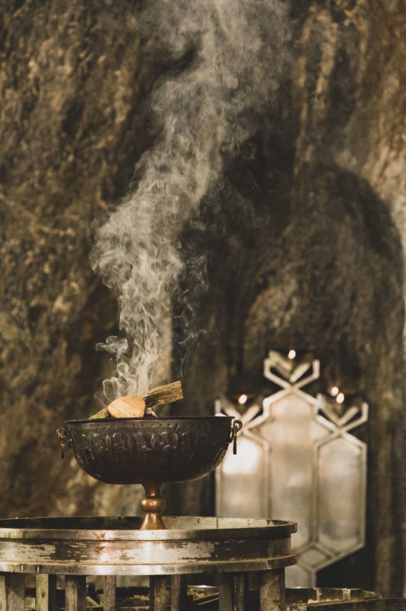eternal fire in Zoroastrian temples
why we celebrate Sadeh festival ? Long Time ago, when the last days of summer was passing , people fill their warehouses for the hard, dark and cold winter. Winter was coming to give them frustration, illness and starvation. Therefor darkness was sign of evil and then light , sun and fire was sign of God’s mercy on people.
In Zoroastrian religion Fire has a significant role. As they protect fires to burn for hundreds of years and different generation take care of an Eternal Fire inside Temples. Fire temple or Atashkadeh is a place of worship . You can visit the fire temples in Iran that there is an ever burning fire in them.
fire is the light
Since fire is a symbol of truth and light for Zoroastrians , after passing one hundred days and nights from summer , they celebrate Sadeh festival. So It is a celebration to remember the importance of light, fire and energy . light which comes from God in our heart.
So for this ceremony young teenage boys gather woods a day before festival. in other words it is kind of entering adulthood for them. such a notable ritual step toward manhood we see in all other cultures.
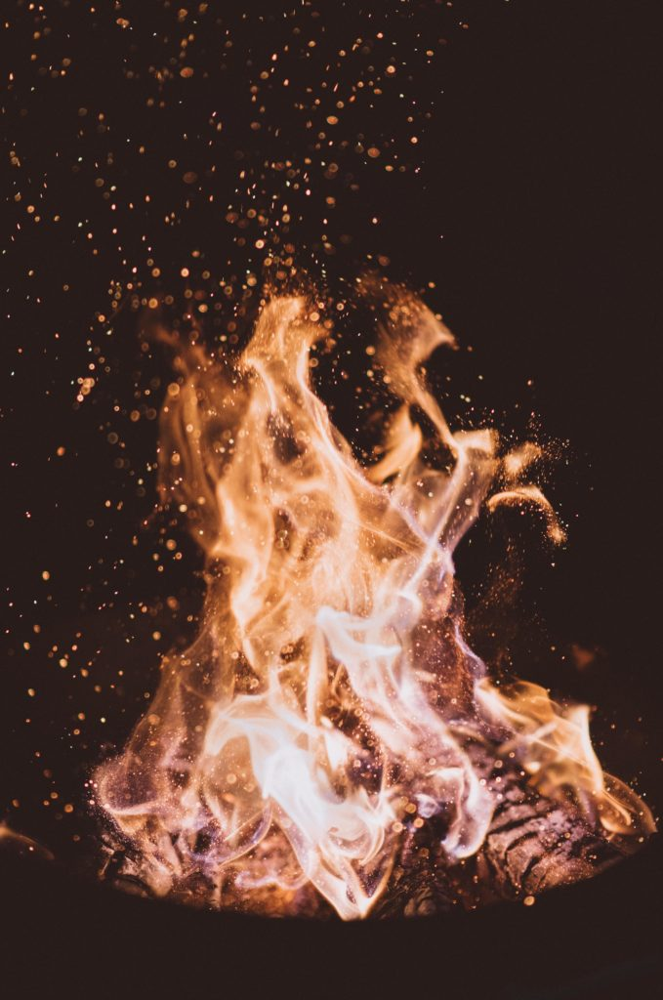
Sade Ceremony is the hope for near spring . still 50 days remains for spring to come and bring joy and prosperity to land.
So people wear all white clothes take their hands around the big fire . then a Zoroastrian priest fires the bushes and together read some prayer.
After the ceremony has ended the priest takes some remained fire from this big fire and take it to the fire temple and take cares of it until next year Sadeh celebration. they will use the exact fire to fire up the Next year firing. so this fire was lightening up for thousand of years. The Eternal Fire!
I am a Tour Guide. I have led a lot of group tours over the past 7 years. I always believed that a tour guide is a teacher, but a trip teacher. Traveling alongside people with a lot of personalities is interesting for me. People of different ages with different abilities to endure travel difficulties. About 2 years ago, when I realized that I am pregnant, I had to change my lifestyle, so abandon tour guiding. It is a job that quickly disappears from daily activities. In the past two years, I've traveled less than my previous life. Whether pregnancy or breastfeeding, and afterwards, it is not easy to travel with an infant. About a month ago, I decided to break this period when my husband suggested traveling to Kharanaq. 10 years ago, my husband and I met each other in Kharanq Caravanserai. He suggested celebrating the 10th anniversary in the same place. It was not easy for me. stepping with a 14-month-old son in this way, I thought it was madness. At first, I did not accept that, but later, with the support of two of my friends (Parastoo and Shamim who work together these days), I accepted. So we planned a 3.5-days trip to Kharandagh, a village in Yazd province. Coordination began. After each phone-call I took for the trip, I had to feed my son or help him for sleeping or clean him. My friends and husband took some responsibility to help me. When the train ticket was opened on the railroad site, I had to buy it quickly, because it could be all reserved and we could lose the train. We all did it in the space where the child was crying. We must had written 35 names and 35 families and 35 national codes without the
I am a Tour Guide. I have led a lot of group tours over the past 7 years. I always believed that a tour guide is a teacher, but a trip teacher. Traveling alongside people with a lot of personalities is interesting for me. People of different ages with different abilities to endure travel difficulties. About 2 years ago, when I realized that I am pregnant, I had to change my lifestyle, so abandon tour guiding. It is a job that quickly disappears from daily activities.
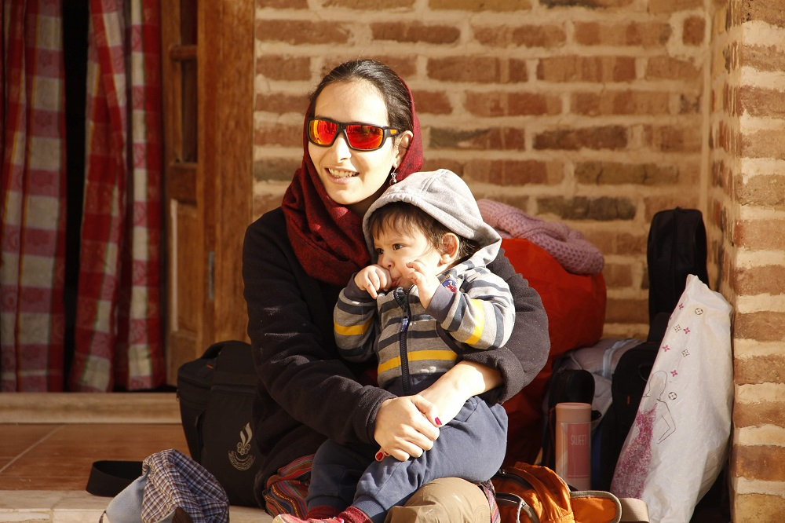
In the past two years, I’ve traveled less than my previous life. Whether pregnancy or breastfeeding, and afterwards, it is not easy to travel with an infant.
About a month ago, I decided to break this period when my husband suggested traveling to Kharanaq. 10 years ago, my husband and I met each other in Kharanq Caravanserai. He suggested celebrating the 10th anniversary in the same place. It was not easy for me. stepping with a 14-month-old son in this way, I thought it was madness. At first, I did not accept that, but later, with the support of two of my friends (Parastoo and Shamim who work together these days), I accepted. So we planned a 3.5-days trip to Kharandagh, a village in Yazd province.
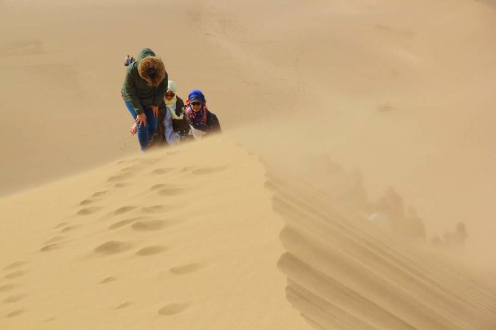
Coordination began. After each phone-call I took for the trip, I had to feed my son or help him for sleeping or clean him. My friends and husband took some responsibility to help me. When the train ticket was opened on the railroad site, I had to buy it quickly, because it could be all reserved and we could lose the train. We all did it in the space where the child was crying. We must had written 35 names and 35 families and 35 national codes without the slightest error. Eventually, the tickets were purchased.
At nights, I was dreaming the nightmare that I lost the train, and the passengers, with the guidance of my 14-month-old son, started the trip. I provided a list of what to do and checked it many times each day.
Parastoo, Shamim, my husband and I, managed the tour during the trip. A tour of 35 people between 14 months to 70 years old. There were 3 other children on the tour, beside my son.
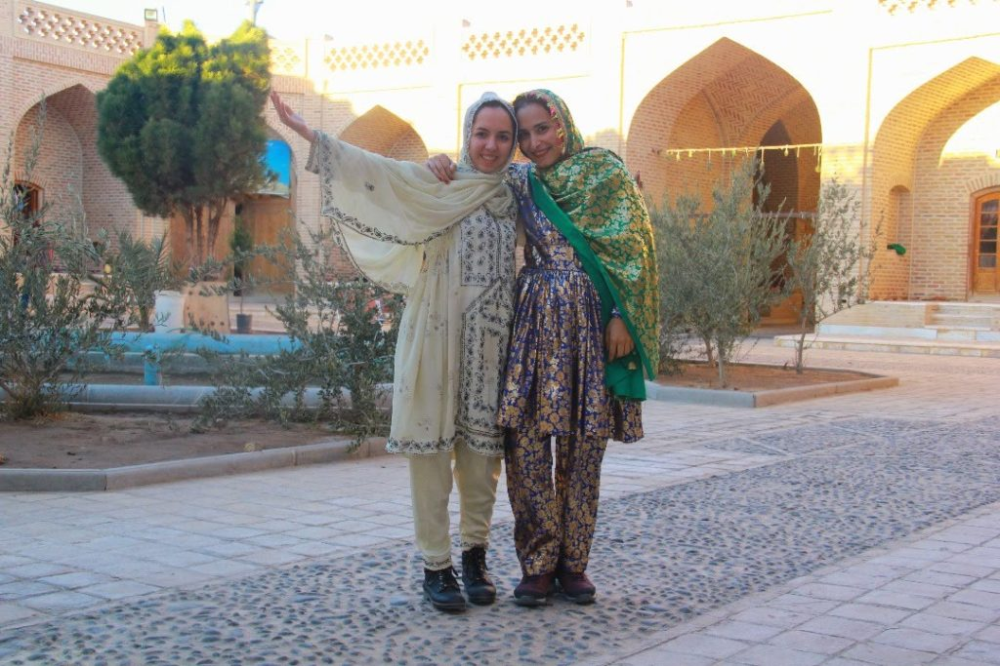
I didn’t sleep the night before the trip for various reasons. We were in the railway at 4 am before the rest. Everyone got together and the besides started. My child was sleeping in the carriage. One side of my mind was occupied by the guard for the ticket, another place to count all the passengers and at the same time worried about losing the carriage in the crowd.
When we arrived in Yazd, we were in charge of picking up passengers and riding a bus. I still was worried about losing the carriage. When I arrived at the Shah Abbasi Caravanserai, where we were supposed to spend 2 nights. I was responsible for setting the dinner, breakfast, the cold temperature of the rooms, the health of the passengers, along with a crying child who and couldn’t sleep and eat. To the end, I was sure I would not see the morning.
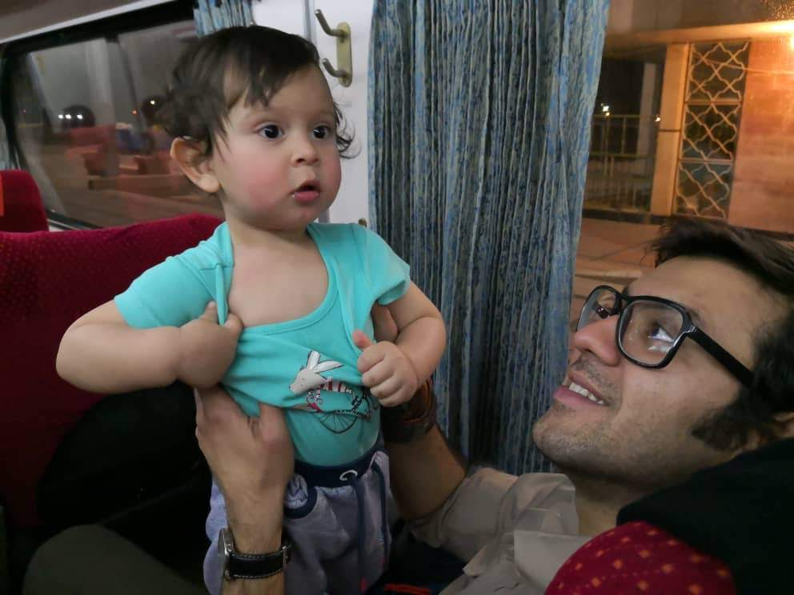
But I saw the morning, and we drove into the desert with travelers who were better than my imagination. The storm of sand in the desert and the destruction of one of the cars, along with the fear of damaging the child’s lungs, changed my mood again. The night we were all around the caravanserai, I felt calm.
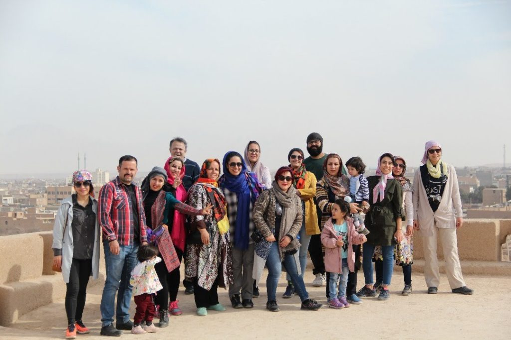
The last day of the trip, visiting Meybod and Ardakan and Yazd, made the trip a bit heavy. At all these times costs should be calculated, we set hours to do so, and each time we should count passengers. At 8 o’clock we boarded the train. I felt like I was in a race and now is near the finish line. I counted everyone. I put the baby carriage in front of me and slept with the train shuffles.
In the morning, when we all came to Tehran with smile, I had a dual sense. Whether I have achieved success or went under the risk of stupidity? I still do not know. I don’t even know shall I advise anyone or not. Anyway, my friends, my husband and I did it all together.
Iran got 54 mountain summits with prominence of 1500 m or greater. lets introduce three highest peaks : Mount Damavand : 5,610 m height. I am an active volcano , I am the highest peak in Iran , and surprisingly highest volcano in Asia. Besides my physical elevation, I have a special elevation in Persian mythology and folklore. Here is how Iranian Poet Mohammad Taghi Bahar call me : Oh white giant with feet in chains Oh dome of the world, Oh Mount Damāvand If you travel to Iran you can see me on the 10,000 rials Banknote, of course, these days it is not worth a lot, but it’s on my peak talent resume. There are many ways to reach my summit, I guess 16 paths. Some of the paths need rock climbing .some are easier. During you climbing you may see my high frozen waterfall which is eventually an ice-fall about 12 m tall on the elevation of 5100m, they say it is highest fall in Iran and the middle east. If you want to visit me you can contact with IranDestina team, they can help you to catch this awesome experience. Sabalan : 4811 m height I am the second highest mountain in Iran. I got a beautiful permanent crater lake at my summit, some visitors found some of the volcanic rock formations which look likes animals, birds and insects. Here what you see? an Eagle maybe! I have a ski resort called Alvares and Sarein spa .in the region Plenty of mineral water springs attracts tourists, and Nomads live near my hillside. As Damavand i have my mythical stories as well. Some say i was the place of Zoroaster meditated for some years. For that, I am a sacred place in
Iran got 54 mountain summits with prominence of 1500 m or greater. lets introduce three highest peaks :
Mount Damavand : 5,610 m height.
I am an active volcano , I am the highest peak in Iran , and surprisingly highest volcano in Asia. Besides my physical elevation, I have a special elevation in Persian mythology and folklore. Here is how Iranian Poet Mohammad Taghi Bahar call me :
Oh white giant with feet in chains
Oh dome of the world, Oh Mount Damāvand
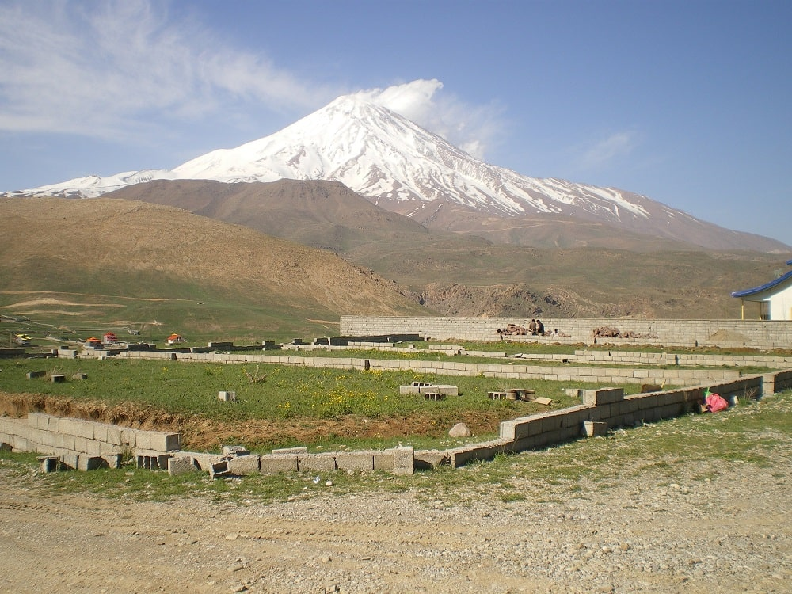Mount Damavand
If you travel to Iran you can see me on the 10,000 rials Banknote, of course, these days it is not worth a lot, but it’s on my peak talent resume.
There are many ways to reach my summit, I guess 16 paths. Some of the paths need rock climbing .some are easier.
During you climbing you may see my high frozen waterfall which is eventually an ice-fall about 12 m tall on the elevation of 5100m, they say it is highest fall in Iran and the middle east.
If you want to visit me you can contact with IranDestina team, they can help you to catch this awesome experience.
Sabalan : 4811 m height
I am the second highest mountain in Iran. I got a beautiful permanent crater lake at my summit, some visitors found some of the volcanic rock formations which look likes animals, birds and insects. Here what you see? an Eagle maybe!
Eagle Rock
I have a ski resort called Alvares and Sarein spa .in the region Plenty of mineral water springs attracts tourists, and Nomads live near my hillside.
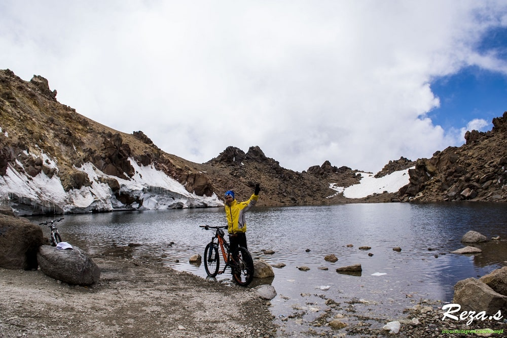Sabalan Lake by Reza Seyedi
As Damavand i have my mythical stories as well. Some say i was the place of Zoroaster meditated for some years. For that, I am a sacred place in Zoroastrianism.
Nomad believes that if my summit snow melt this is the end of world, you can connect such believe to global warming that is happening, that’s why today we are talking about sustainable mountains.
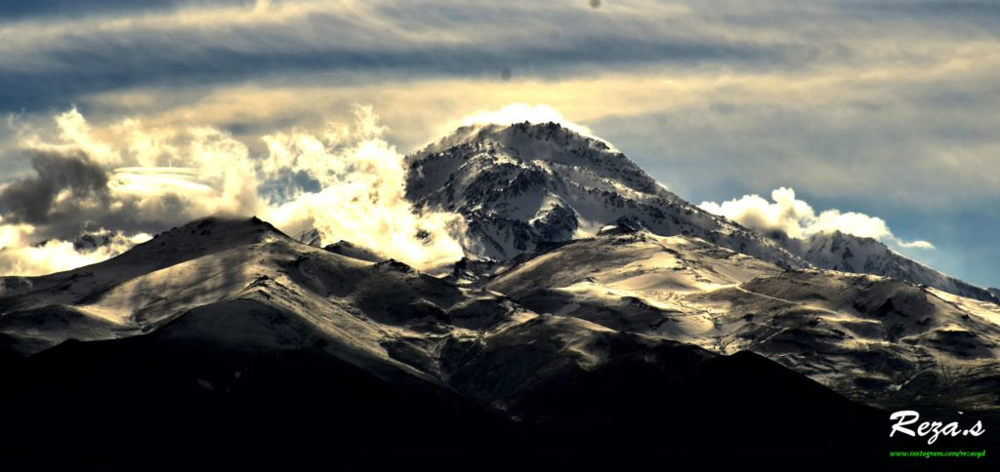Photographer Reza Seyedi
Alam-kuh : 4805 m height.
I got the bronze medal and stood on the 3rd highest peak of Iran. There were two German brothers Bornmuller who stood on my summit after 6 months exploration in the Alborz in 1902.
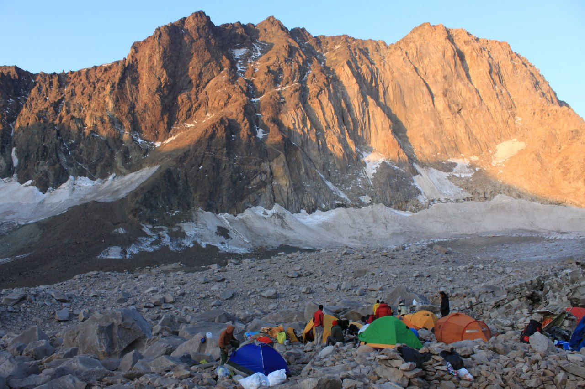Alam kuh
I got the most difficult mountaineering in Iran. Thus I attract European climbing teams and they got root’s name like, German Flank which is a rocky ridge to the summit. And Polish 48.
Do you know about Yalda? The night of Yalda is the last day of fall and it is the longest night of the year in the Northern hemisphere. In Yalda night there is a special ceremony in Iran. In most parts of Iran, the extended family gather around and enjoy their time together with a lot of foods and snacks. If I could call this night with another name that would surely be the "delicious night"! There are many varieties of fruits, pastry, and nuts. Everyone is talking about this night weeks before and they are deciding where to gather and what to cook. Pomegranates and watermelons are the special fruits for this time. Although the watermelons are most of the time white because of the season. :) parents usually give newlyweds presents on this night. children are happy that they can stay awake until late at night and enjoy their time with the family and sweets! Wait a minute! After writing this blog post, I started to share it on social media, and I suddenly remembered I didn't mention anything other than food. I obviously forget the cultural part of Yalda night, because I am so foody that I missed the most important part of this special night, reading poems! At this night we read Hafez, Khayyam, and Ferdousi poems together, we also tell our fortune with reading Hafez poems by chance and dear Hafez speak to us and advice us what to do in the future. After that, I got a really nice comment on my post which I will bring here. Yalda is the longest night of the year. Yalda is also a girls name (maybe with thick long black hair). The family gathers together, mostly at grandparents place, so they fight and survive the "darkness" together. The
Do you know about Yalda?
The night of Yalda is the last day of fall and it is the longest night of the year in the Northern hemisphere. In Yalda night there is a special ceremony in Iran. In most parts of Iran, the extended family gather around and enjoy their time together with a lot of foods and snacks. If I could call this night with another name that would surely be the “delicious night”!
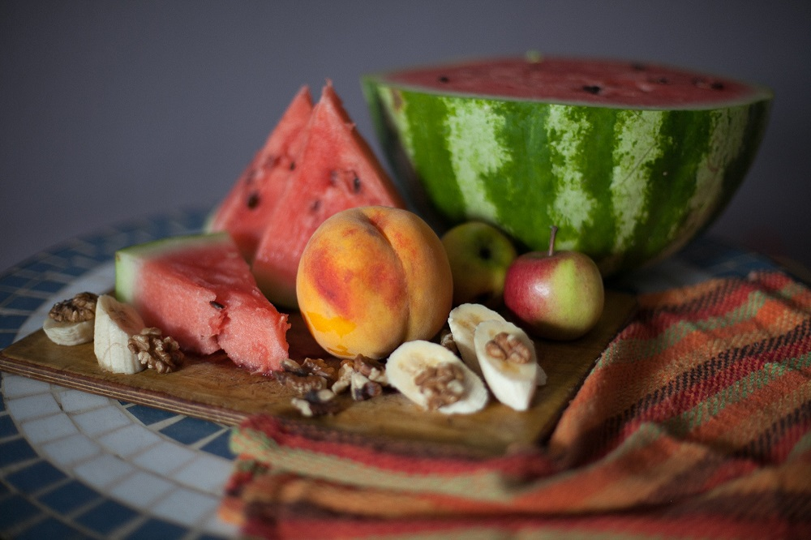Photo by Roman Davayposmotrim on Unsplash
There are many varieties of fruits, pastry, and nuts. Everyone is talking about this night weeks before and they are deciding where to gather and what to cook. Pomegranates and watermelons are the special fruits for this time. Although the watermelons are most of the time white because of the season. 🙂 parents usually give newlyweds presents on this night. children are happy that they can stay awake until late at night and enjoy their time with the family and sweets!
Wait a minute!
After writing this blog post, I started to share it on social media, and I suddenly remembered I didn’t mention anything
other than food. I obviously forget the cultural part of Yalda night, because I am so foody that I missed the most important part of this special night, reading poems!
At this night we read Hafez, Khayyam, and Ferdousi poems together, we also tell our fortune with reading Hafez poems by chance and dear Hafez speak to us and advice us what to do in the future.
After that, I got a really nice comment on my post which I will bring here.
Yalda is the longest night of the year. Yalda is also a girls name (maybe with thick long black hair).
The family gathers together, mostly at grandparents place, so they fight and survive the “darkness” together. The elderly entertain by telling stories (keep everyone busy so they forget the presence of the darkness) and feed the family with some summer fruits (saved for months in a cool place) reminding their flock of longer days ahead.
We Iranians celebrate by constantly using our profound symbols of life and creation.
Okay, now I feel much better, but I will definitely add more things on this blog as soon as I remember or if any of you remind me more traditions for this wonderful night!
Do you want to celebrate Yalda with us?
This year, Irandestina group as a tourism event organizer invites all travelers who are in Tehran to celebrate Yalda night together. This ceremony will be held in Baccara Cafe with one of the most creative team and local food and beverages. We celebrate Yalda in Baccara Cafe for happiness, poetry, live Persian traditional music, Yalda snacks, Siah Bazi performance, etc.
Tajrish Bazaar is located at the north side of Tehran in Shemiranat County, near northern hills and Imamzadeh Saleh. In the past Shemiranat was apart from the urban part. Because of the mountains, the temperature in Tajrish square is lower than other parts of Tehran and in summer you can enjoy the weather. Tajrish bazaar is a small sample of Tehran bazaar and you can spend at least a day in this area. I personally like Tajrish and the bazaar because of its atmosphere. The bazaar consists of a vegetable market that has a great vibe and it is colorful. Everyone is looking for something and sometimes you stuck in people traffic. Local people really like this place and people from all over Tehran go there to shop or just enjoy the colorful shops. Whenever I go there I should buy something, I cannot resist the smell and image. You hear sellers trying to advertise their products and they smile at you. There is almost everything in the Bazaar and you will not come back home without finding what you need. For tourists and photographers, it is a nice place to shoot photos, especially in the early morning, both because of the light and because it is less crowded. You can spend at least one day in this area, there is also lots of attractions nearby. Like: Imamzadeh Saleh Darband mountains and village Saad abad palace Niavaran palace Tajrish bazaar is close to Tajrish metro station and you can reach there easily.
Tajrish Bazaar is located at the north side of Tehran in Shemiranat County, near northern hills and Imamzadeh Saleh. In the past Shemiranat was apart from the urban part. Because of the mountains, the temperature in Tajrish square is lower than other parts of Tehran and in summer you can enjoy the weather. Tajrish bazaar is a small sample of Tehran bazaar and you can spend at least a day in this area.
Tajrish Bazaar
I personally like Tajrish and the bazaar because of its atmosphere. The bazaar consists of a vegetable market that has a great vibe and it is colorful. Everyone is looking for something and sometimes you stuck in people traffic. Local people really like this place and people from all over Tehran go there to shop or just enjoy the colorful shops.
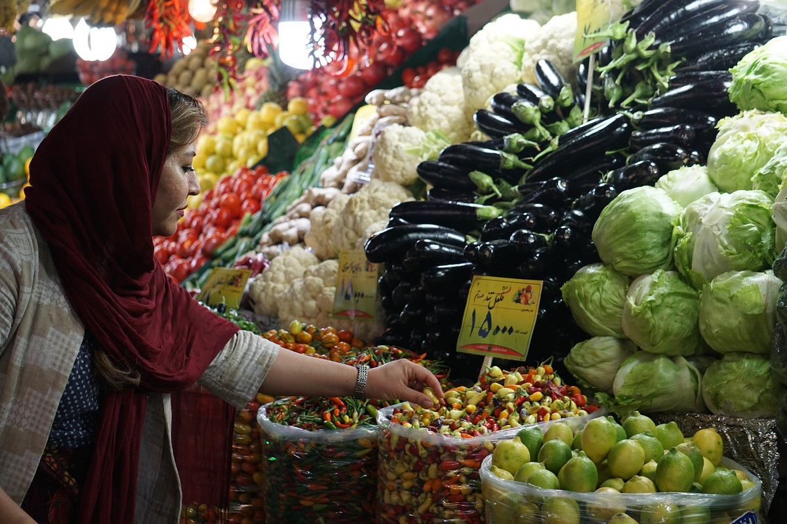Colorful vegtables
Whenever I go there I should buy something, I cannot resist the smell and image. You hear sellers trying to advertise their products and they smile at you. There is almost everything in the Bazaar and you will not come back home without finding what you need.
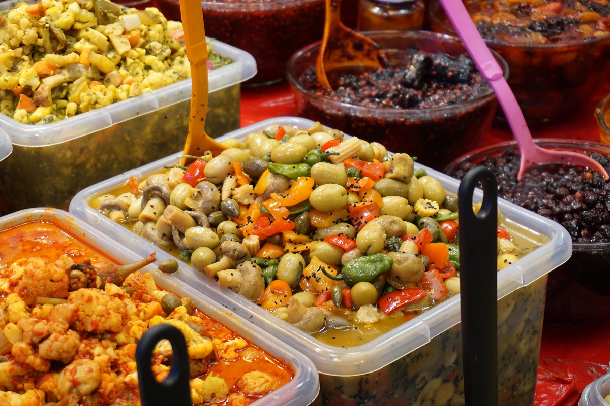Homemade olive pickles
For tourists and photographers, it is a nice place to shoot photos, especially in the early morning, both because of the light and because it is less crowded.
You can spend at least one day in this area, there is also lots of attractions nearby.
Like:
Imamzadeh Saleh
Darband mountains and village
Saad abad palace Niavaran palace Tajrish bazaar is close to Tajrish metro station and you can reach there easily.
In Bam, you can go on a Date in a special Date during a year and eat Dates That are produced in Bam. I don't know why English lacks words, just kidding:))) for your Information I should say the quality of Dates from Bam is so good that it is mostly exported out of Iran. they are named “Mazafati Date”. The beautiful Palm trees that make them are around the Arg-e Bam oasis that are on the World Heritage list you can find more information on Unesco, this heritage is called “Bam and its Cultural Landscape. What are Arg-e Bam special features: fortified medieval town built in vernacular technique using mud layers (Chineh) being in the crossroads of important trade routes( silk road) known for the production of silk and cotton clothing underground irrigation canals (called “qanāts”) Beside archaeological values, you may remember Bam for the devastating earthquake happened in 2003, unfortunately, 26,200 people died in that disaster. Hopefully, Bam has been rebuilt. So it’s IranDestina’s recommendation to visit this medieval town and its green landscape, ring of Palm trees in heart of the desert.
In Bam, you can go on a Date in a special Date during a year and eat Dates That are produced in Bam. I don’t know why English lacks words, just kidding:))) for your Information I should say the quality of Dates from Bam is so good that it is mostly exported out of Iran. they are named “Mazafati Date”.
Arts with palm tree
The beautiful Palm trees that make them are around the Arg-e Bam oasis that are on the World Heritage list you can find more information on Unesco, this heritage is called “Bam and its Cultural Landscape.
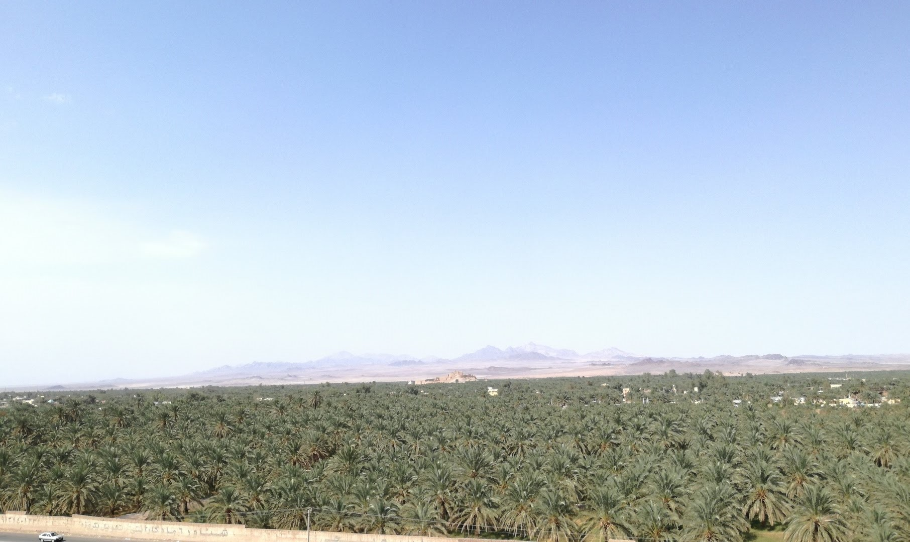Palm trees Bam
What are Arg-e Bam special features:
fortified medieval town
built in vernacular technique using mud layers (Chineh)
being in the crossroads of important trade routes( silk road)
known for the production of silk and cotton clothing
underground irrigation canals (called “qanāts”)
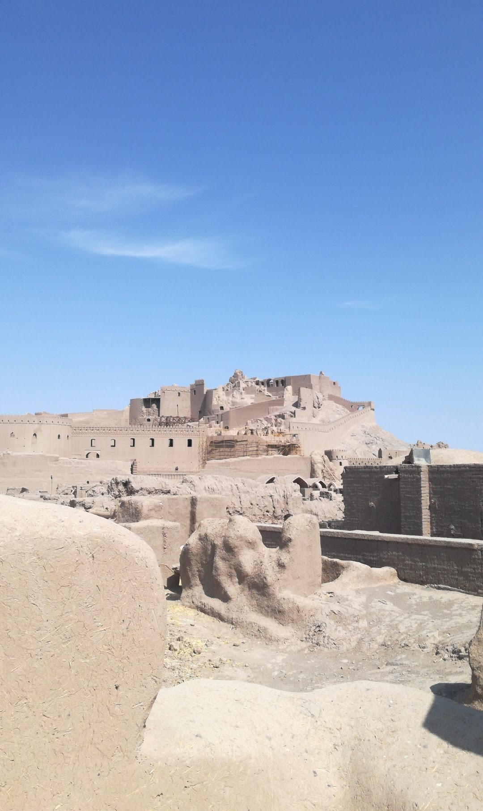Arg e Bam
Beside archaeological values, you may remember Bam for the devastating earthquake happened in 2003, unfortunately, 26,200 people died in that disaster. Hopefully, Bam has been rebuilt. So it’s IranDestina’s recommendation to visit this medieval town and its green landscape, ring of Palm trees in heart of the desert.
A trip to Iran, we had been planning for a couple of years and it was noticeable that everyone comes home with the same stories: what a very versatile country, what a delicious food and especially the people. Nowhere in the world are people as sweet and hospitable as in Iran. In May 2017 we went to Iran for two weeks and the fun is, our anecdotes are exactly as predicted. It is indeed a beautiful country, it has a lot to offer for the interested traveler. You will find culture, nature, ancient history treasures, fine hostels and hotels, great food and indeed: the dearest people you can imagine. We have our two weeks filled with a route that many tourists follow: from Tehran by bus to Kashan, then to Yazd by train, then by bus to Shiraz, by taxi to Esfahan (with a break in Persopolis) and if last one bus ride from Esfahan back to Tehran. Those cities are all different and give you different experiences. Yazd is in the desert and the center looks like 1000 in a night. In Iran, much (everything) is very good to arrange on the spot. The only thing we had in preparation was a visa, a hostel for the first nights, and cash to change, (think of 1000 Euro pp for two weeks and this was more than enough). That was it and that was enough. In every hostel where we were, we asked the owner if we could call and the overnight stays were fixed very quickly. In any case, everyone is willing to help you and a train or bus ticket has always been bought. Also, count on people wants to have a chat with you. There are more tourists coming to Iran for a number of years, especially
A trip to Iran, we had been planning for a couple of years and it was noticeable that everyone comes home with the same stories: what a very versatile country, what a delicious food and especially the people. Nowhere in the world are people as sweet and hospitable as in Iran.
In May 2017 we went to Iran for two weeks and the fun is, our anecdotes are exactly as predicted. It is indeed a beautiful country, it has a lot to offer for the interested traveler. You will find culture, nature, ancient history treasures, fine hostels and hotels, great food and indeed: the dearest people you can imagine.
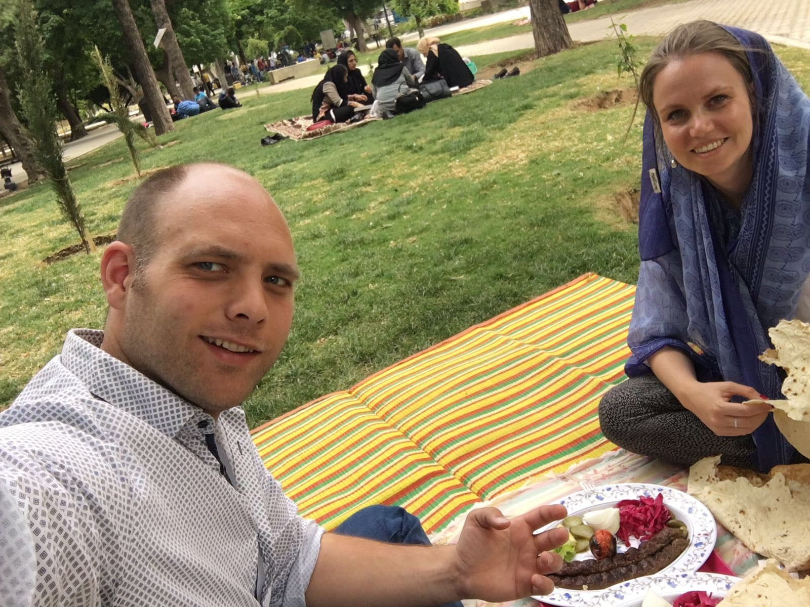Iranian picnic
We have our two weeks filled with a route that many tourists follow: from Tehran by bus to Kashan, then to Yazd by train, then by bus to Shiraz, by taxi to Esfahan (with a break in Persopolis) and if last one bus ride from Esfahan back to Tehran. Those cities are all different and give you different experiences. Yazd is in the desert and the center looks like 1000 in a night.
In Iran, much (everything) is very good to arrange on the spot. The only thing we had in preparation was a visa, a hostel for the first nights, and cash to change, (think of 1000 Euro pp for two weeks and this was more than enough). That was it and that was enough. In every hostel where we were, we asked the owner if we could call and the overnight stays were fixed very quickly. In any case, everyone is willing to help you and a train or bus ticket has always been bought. Also, count on people wants to have a chat with you. There are more tourists coming to Iran for a number of years, especially to the tourist spots like Esfahan, Shiraz, and Yazd, but also rely on the fact that you are approached by students and people who want to practice their English.
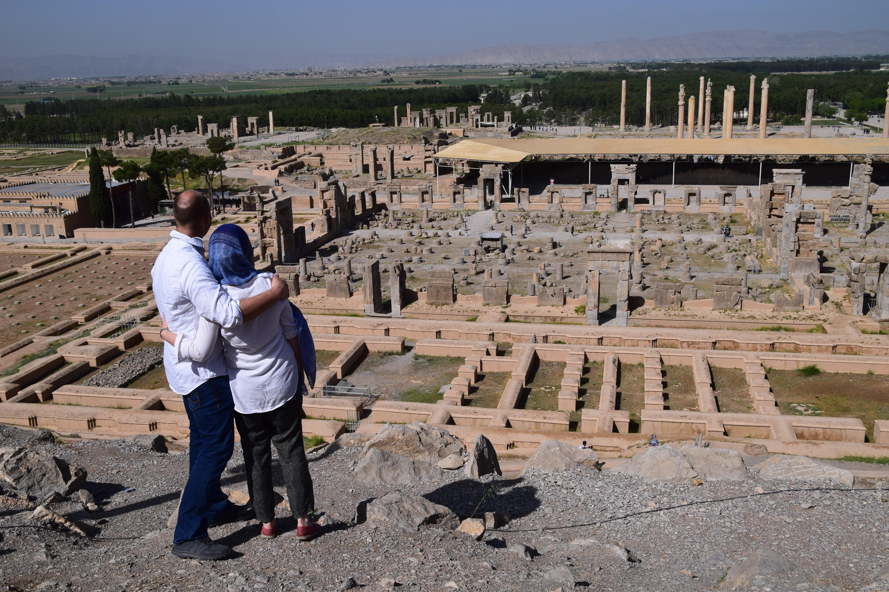Persepolis
An Iranian SIM card is therefore useful for this kind of phone calls. We kept in touch with Mera and Ali, and they tipped us which hostel was nice, where the bus station in Tehran was and what you should try.
The food is an experience in itself! In hostels and hotels, you often get a delicious varied breakfast, with bread and especially a lot of fruit. And tea, liters of tea! On the bus and train, you usually receive a box of refreshments for your journey after boarding. (Do you see this doing the NS? If you are traveling from Utrecht to Amsterdam in rush hour, we were amazed!). And then, of course, you have the delicious restaurants with kebabs and all kinds of stews with greetings. Vegetarian food is certainly possible, but you can count on it that meat is served in most meals. (and so nicely seasoned).
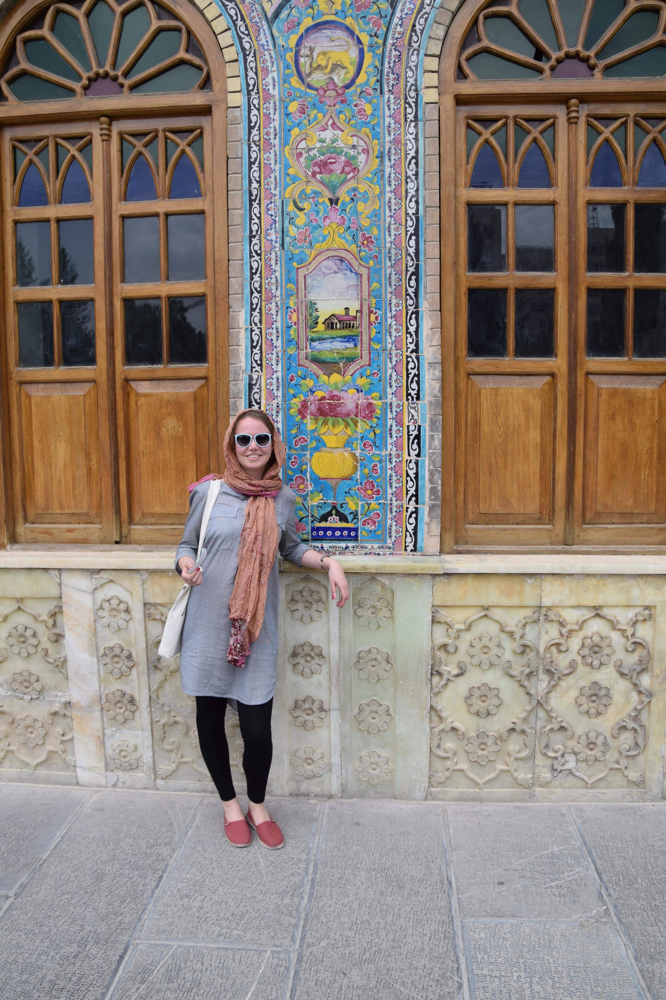Golestan Palace
I can only recommend you to go. It’s a bit more hassle than an all inclusive holiday in Spain, but those who love backpacking and traveling around are really recommended!
There are a few things that are useful to know in advance. For example, you can apply for a visa at the embassy in The Hague, or if you prefer not to do it yourself via a visa agency. You can also buy a visa at customs in Iran, but there was a line with us. Do what you want, of course, but it seems nice to go through the passport control on arrival.
Well, then you only have to enjoy it. Expect a lot to be addressed, school children want to take a picture with you or want to interview you in front of the camera, and many people want to practice their English with you.
My advice: just go and enjoy everything!